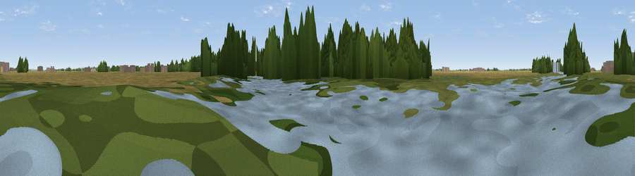

Viewpoint near Boston
#43314 in England · top 73% of its area beats it · near BostonThe view, rendered

A 360° render of this exact spot computed from the terrain model, tree cover and land cover — summer colours, afternoon light, calibrated against photographs of famous viewpoints. Real trees, hedges and buildings will differ in detail.
The panorama
Grey silhouette: terrain skyline in each direction (720 bearings, Earth curvature and refraction included). Dashed green: skyline with trees (+15 m) and buildings (+8 m) as obstacles. Blue strip: how far the ground is visible on each bearing.
Where the view opens
Wedge length = distance to the farthest visible ground on that bearing (vegetation-aware). Rings at 10, 25 and 50 km.
What fills the view
43% cropland · 25% woodland · 21% grassland · 8% water · 2% built-up ·
Angular shares of the visible panorama (visual magnitude), not map area. Landscape diversity 0.59 (0–1 Shannon).
Key numbers
More beautiful places nearby
The staircase of upgrades: each row has a higher view potential than everything closer. Driving times are estimates from straight-line distance, calibrated against real road routing — check an actual route before setting out.
| Place | Direction | Drive | Score |
|---|---|---|---|
| Viewpoint near Fishtoft | SE · 6 km | ~12 min | 29.4 |
| Viewpoint near Fishtoft | SE · 11 km | ~20 min | 37.5 |
| Grantam Point | NNE · 19 km | ~32 min | 58.0 |
| Viewpoint near East Keal | NNE · 19 km | ~33 min | 66.0 |
| Viewpoint near Belvoir | WSW · 51 km | ~72 min | 70.8 |
| Viewpoint near Claxby | NNW · 53 km | ~75 min | 71.5 |
| Broombriggs Hill | WSW · 86 km | ~110 min | 74.4 |
| Viewpoint near Woodhouse Eaves | WSW · 86 km | ~110 min | 77.7 |
52.99362, -0.04670 · source: osm viewpoint · position refined by local search. Computed location — check access rights before visiting.